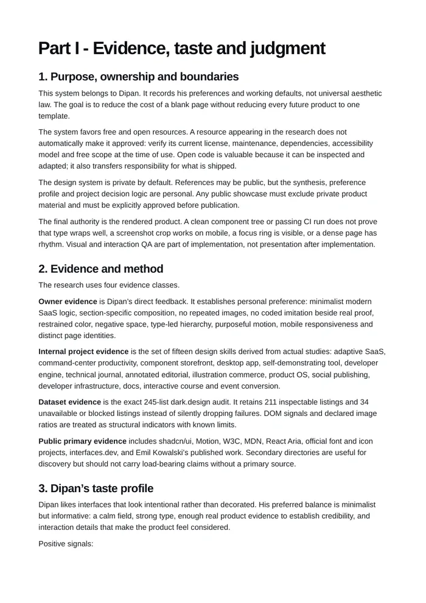
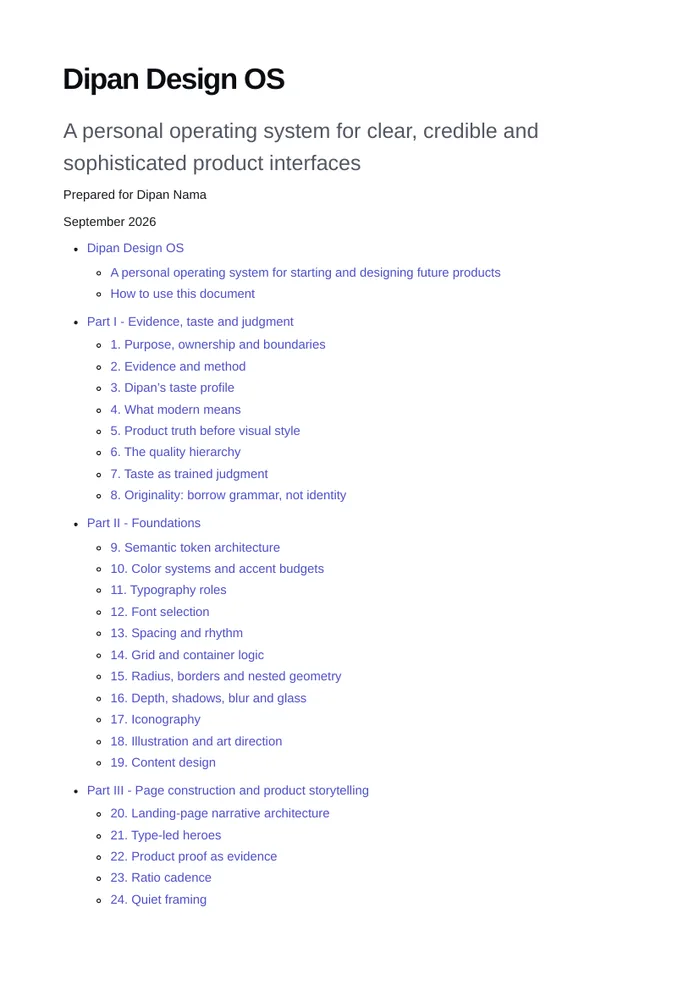
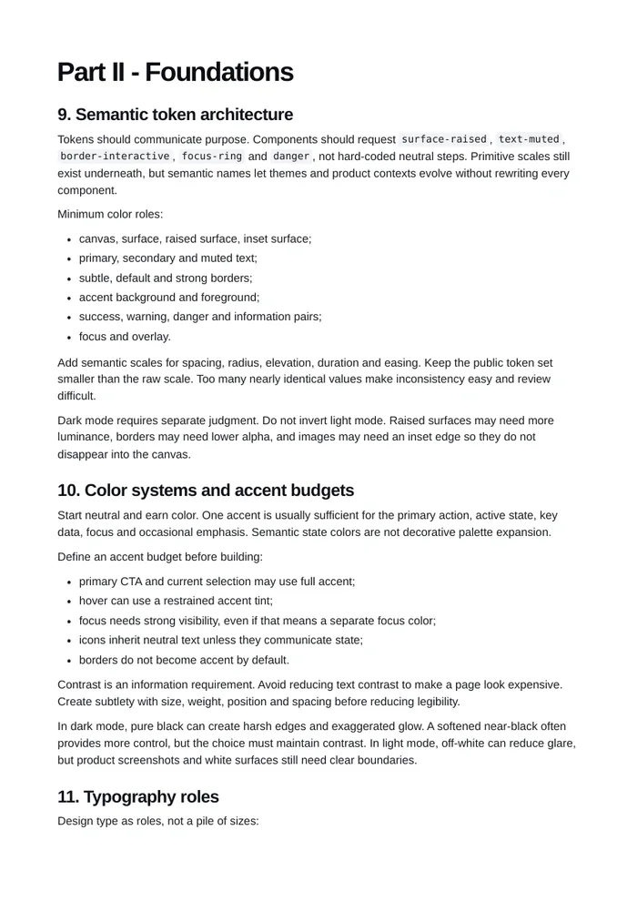
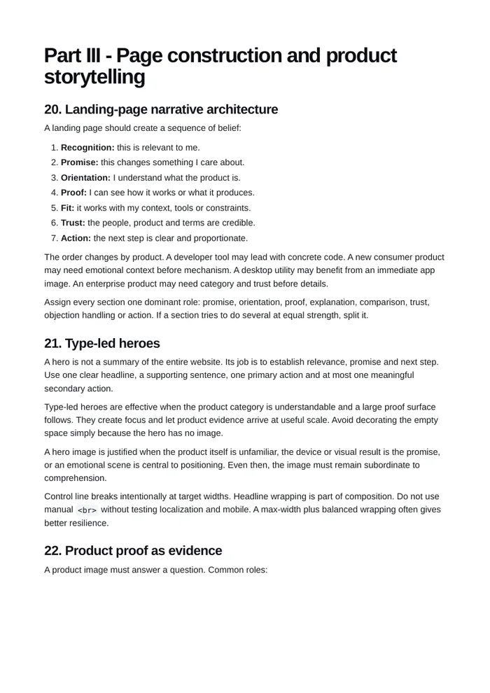
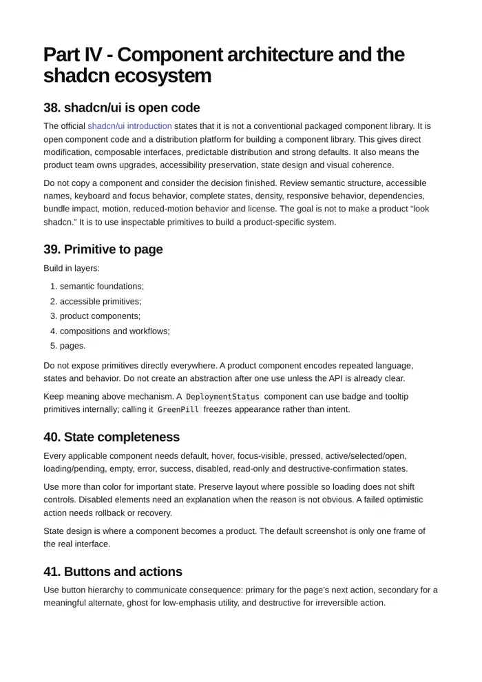
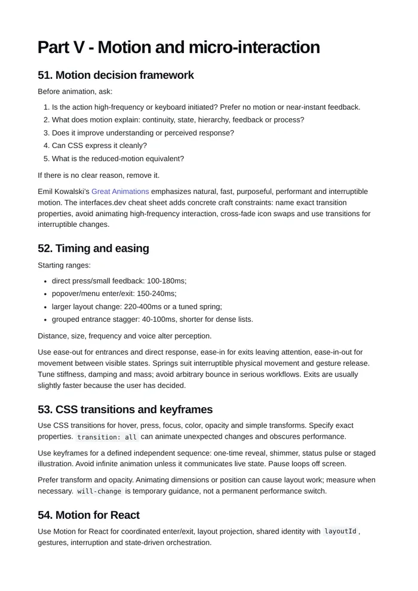
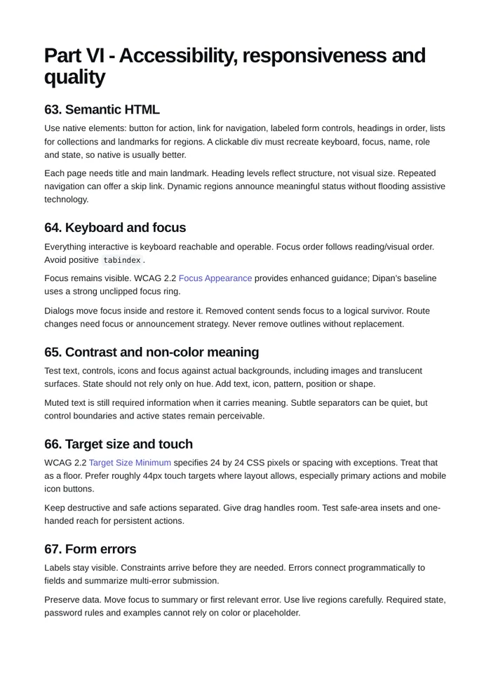
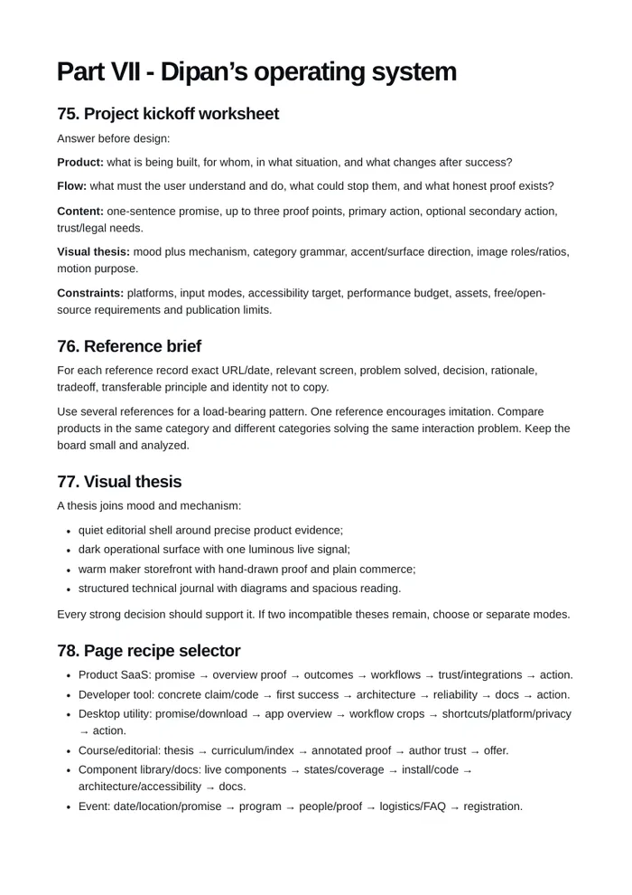

Plain, concise guidance
Each section explains one decision: why it matters, the rule to follow and when to break it. No filler.
Dipan Design OS is a personal source of truth for product design. A 48-page report, one combined skill and a 245-site audit, each idea written plainly and shown in real pages.16px / 1.55 · max-width 60ch
Updated September 2026 · Free to read
Markdown, PDF and skill files. All open in this repo.



Each section explains one decision: why it matters, the rule to follow and when to break it. No filler.
Every claim is backed by a finished page from the report or one of the 245 landing pages audited, not a coded mock-up.
Read it before any new UI work. It records what he likes and how he wants things to be, so every build starts from judgment.
Seven parts and 89 chapters. Open a part to see highlights from it.
08Appendices: sample chapter, source ledger and gallery research.
The whole system is packaged as a skill. Point Claude, ChatGPT, Cursor or v0 at it and the pages they produce follow his rules: type first, real proof, one accent, motion with a reason.
// from skill/SKILL.md
DECISION ORDER
- Product truth, then information architecture, then hierarchy.
- Evidence: a real interface or result for each claim.
- Motion only when it explains change or confirms input.
NON-NEGOTIABLES
- Fully responsive. Mobile restructures, it does not shrink.
- Real finished imagery. No CSS scenes posing as screenshots.
- One accent, quiet borders, generous negative space.
…If you start products and care how they look, this is for you.
It is a personal reference for future builds. It records taste so every new product starts from it, not from a blank page.
Developers get the designer's reasoning. Designers get the shadcn-based component and state rules.
Hand the skill to your AI tools so the first draft already follows a spacing scale, type roles and a motion system.
Open the report, or drop the skill into your tools. Both are free and live in this repo.




